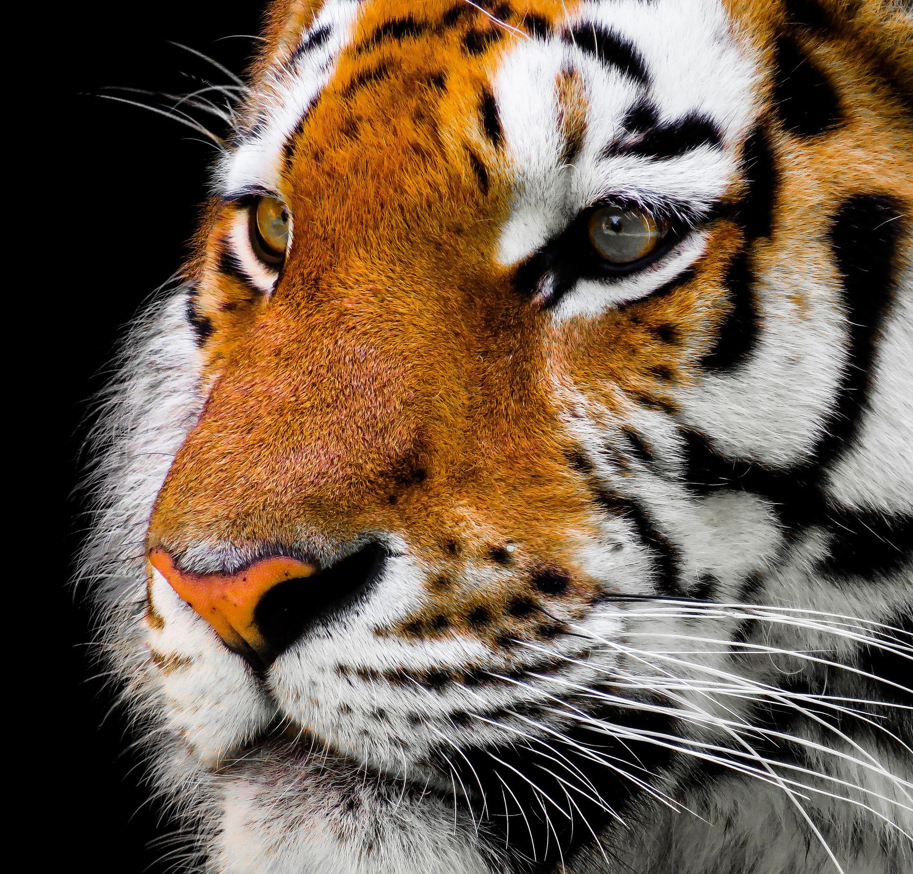
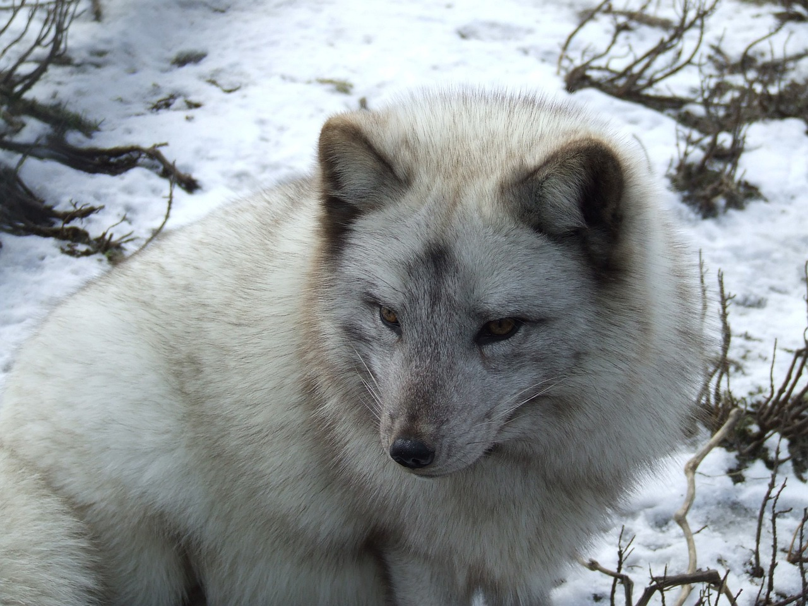
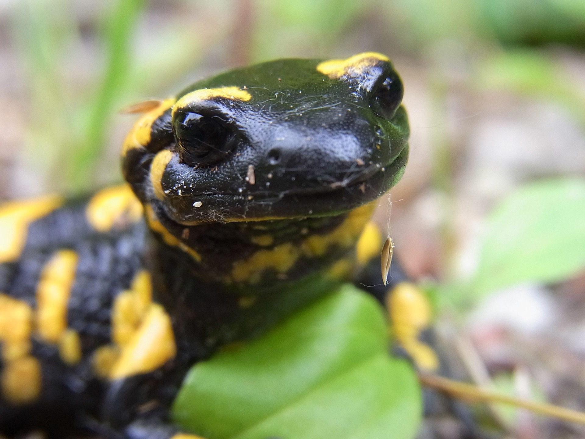

Elefantes
Son animales mamíferos, exclusivamente herbívoros cuya característica principal, además del gran tamaño, es su larga trompa y sus enormes orejas.

Tigre (Goranghee)
El tigre (Panthera tigris) es una de las especies de la subfamilia de los panterinos (familia Felidae) pertenecientes al género Panthera.

Zorro del Ártico
El zorro ártico o zorro polar es una especie de mamífero carnívoro de la familia de los cánidos que habita en huras a lo largo y ancho de la tundra, generalmente en laderas.

Gato
Mamífero felino de tamaño generalmente pequeño, cuerpo flexible, cabeza redonda, patas cortas, cola larga, pelo espeso y suave, largos bigotes y uñas retráctiles; es carnívoro y tiene gran agilidad, buen olfato, buen oído y excelente visión nocturna; existen muchas especies diferentes.

Salamandra
La salamandra común (Salamandra salamandra) es una especie de anfibio urodelo de la familia Salamandridae. Es el más común de los urodelos en Europa.